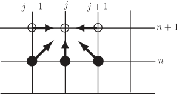

Long description: crankstencil

Alt text: A diagram showing a grid structure with arrows indicating relationships between three adjacent points, labeled at positions \(j-1\), \(j\), and \(j+1\) along the horizontal axis at levels \(n\) and \(n+1\).
This description was generated by AI and has not been verified by a human. If you spot an error, please use the feedback link below.
- The image displays a two-dimensional grid structure representing points at discrete levels \(n\) and \(n+1\) along a horizontal axis defined by indices \(j-1\), \(j\), and \(j+1\).
- On the level labeled \(n\), there are three solid black circles positioned directly below the corresponding indices \(j-1\), \(j\), and \(j+1\).
- On the level labeled \(n+1\), there are three open circles positioned directly above the corresponding indices \(j-1\), \(j\), and \(j+1\).
- Arrows are drawn between the levels, connecting the points. Specifically, there is a pair of opposing arrows connecting the point at index \(j-1\) on level \(n\) to the point at index \(j-1\) on level \(n+1\), and a corresponding pair of arrows connecting the point at index \(j+1\) on level \(n\) to the point at index \(j+1\) on level \(n+1\).
- Most prominently, a set of three upward-pointing arrows are drawn originating from the central point (index \(j\)) on level \(n\) and pointing towards the corresponding open circle at index \(j\) on level \(n+1\).
- Furthermore, two diagonal arrows are drawn pointing up and inward from the points at indices \(j-1\) and \(j+1\) on level \(n\) towards the central point \(j\) on level \(n+1\), suggesting a stencil operation centered at index \(j\).